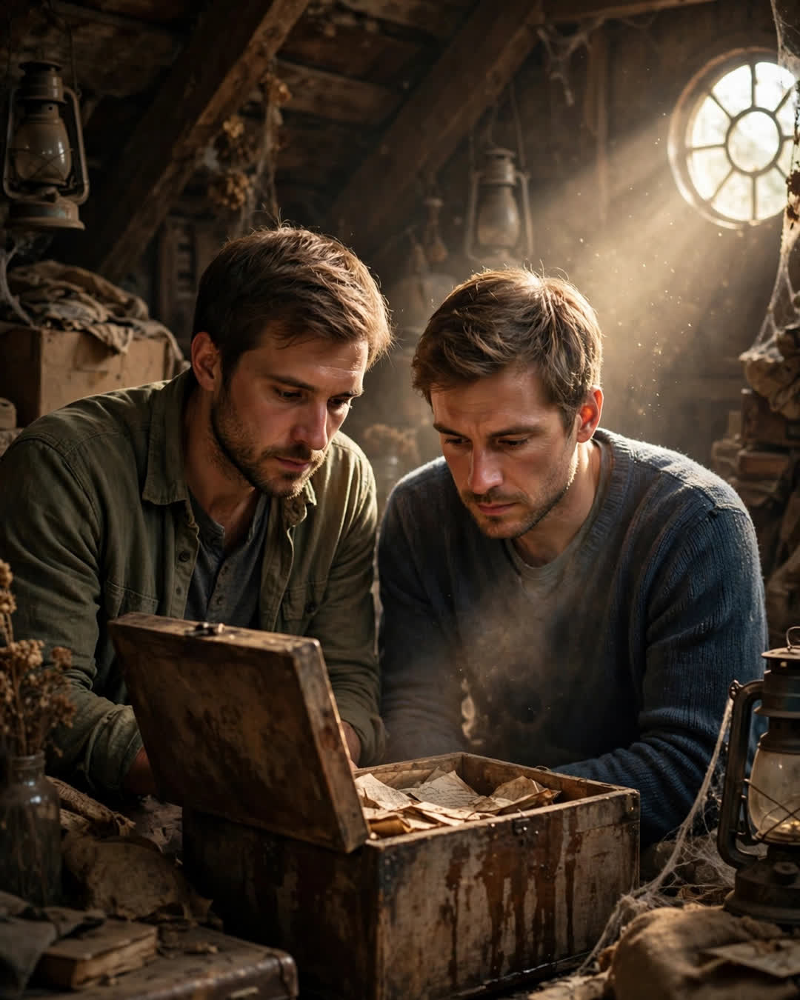

The Attic Letters
A Clipp Kaili original story

We went up to the attic to throw our parents' past away, and instead we found out they almost never met at all.
Mom and Dad had been married forty-six years when Dad passed, and Mom decided, clear-eyed and unsentimental, that the house was too big and the attic was full of "other people's memories." She hired no one. She appointed us — me and my twin brother, Marcus — with trash bags and strict instructions not to come down asking questions about every little thing.
We lasted forty minutes.
The box was behind the Christmas decorations, water-stained, labeled in Dad's block letters: "KEEP — R." R was for Ruth. Our mother. Inside were letters — dozens of them, in envelopes gone the color of weak tea, all addressed to our father in a young woman's looping handwriting we had never seen in our lives.
Our parents' story, the one we had heard at every anniversary, was simple. They met at a church picnic in 1977. Dad spilled lemonade on Mom's dress. She laughed. That was that. It was such a complete story that it never occurred to either of us to ask what came before it.
The letters were what came before it.
Ruth Alvarez — Mom, before she was Mom — had been engaged to someone else. A young man named Thomas, who had gone overseas for work the year before the picnic, and who wrote rarely. And Frank, our father, a quiet mechanic's apprentice, had met her at that picnic, spilled lemonade on her dress, and then written to her the following Monday to apologize — and then again the next week, for no reason he could defend. And she had written back.
We sat in that attic dust, two forty-year-old men with trash bags forgotten in our hands, reading our parents falling in love while our mother was promised to somebody else.
It was not scandalous. That was the shock of it. It was honorable, and painful, and so careful it hurt to read. Letter after letter where Dad says she owes him nothing, where he will stop writing the second she asks, where he tells her in shaky handwriting that a man doesn't have to be chosen to wish somebody well. The last letter in the box was dated three days before the wedding that didn't happen.
"If Thomas comes home and your heart is his, I will shake his hand and mean it," Dad wrote. "But if you are marrying him because a promise is easier to keep than a heart is to follow, then come to the lake on Saturday. I will be there until dark. I will always be there until dark, Ruth. That is my whole offer. A man who stays."
Thomas came home. Mom went to the lake.
She never told us because, she said later, standing in her kitchen with the box on the table and forty-six years of marriage behind her, some choices are too private even for the people they made. "Your father never once made me feel rescued," she said. "He just waited at a lake like a lighthouse with work boots. I chose the light. I would choose it every time."
We didn't throw the box away. Marcus built a cedar case for it that winter. And every anniversary of the day they met, Mom takes out one letter and reads it at the kitchen table, in a house that is smaller now, but full.
We thought our parents' love story began with spilled lemonade and a laugh.
It began with a young man who offered everything and demanded nothing — and waited until dark, as long as it took.
← Back to all stories